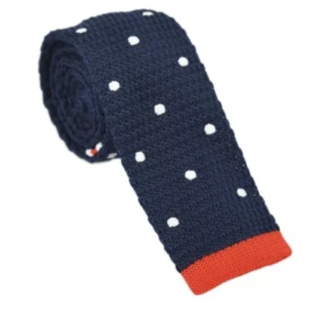

La o vedere superficială am fi ispitiți să spunem că bărbații nu au nevoie de atât de multe sfaturi, bla, bla… pe tema vestimentației: o pereche de blugi, o cămașă și o pereche de teniși rezolvă orice problemă. Dar, întrebarea este… Cu toate că, gama articolelor masculine este vizibil mai redusă decât cea feminină, cunosc cu adevărat prietenii, iubiții, cunoștințele noastre de sex masculin, diferențele și mai ales regulile menite să ajute în a rezulta combinații reușite?…. vă propun să răspundeți la această întrebare după ce citiți cuvintele de mai jos.
Iulia Andrei - Cum să porți papionul sau cravata?
În ultima vreme am primit multe propuneri din partea voastră referitor la subiectele pe care aș putea să le abordez pe blog. Vă mărturisesc că unul dintre cele mai des auzite a fost: vestimentația masculină.
Papionul sau cravata?
Mi-am propus ca de început să stabilim diferențele și modalitățile de bună purtare a unor accesorii profund masculine: Papionul sau cravata? Cum le purtăm?
Ei bine, puțini dintre noi chiar stăm să medităm pe acest subiect și mai puțini chiar facem niște cercetări în acest domeniu. Ce alegem… papionul sau cravata?
Cravata

Cravata este într-adevăr o mărturie a eleganței masculine DACĂ culoarea și modelul ales sunt în armonie cu costumul sau celelalte părti componente ale ținutei.
Spre deosebire de papion, cravata se pretează pe mai multe situatii. Putem opta pentru cravată atât la o întâlnire de afaceri, cât și la o ieșire la film.
Cum să port cravata la o ținută business?
De cele mai multe ori, la birou sau în situații care impun un dress code oficial, cravata este soluția ideală în defavoarea papionului (nu pentru că cel din urmă nu ar da dovadă de o seriozitate demnă de luat în considerare).
Desigur, cum spuneam mai sus, reușita unei ținute business constă în capacitatea de a asorta cravata la costumul ales. Culorile care asigură succesul în acest domeniu sunt albastru și griul deschis, iar pentru un plus de eleganță albul este alegerea ideală.
Se vor alege croiuri simple, materiale precum mătasea și desigur, în cazul în care cămașa este cu imprimeu, cravata trebuie în mod obligatoriu să fie simplă și într-o nuanță regăsită în culorile cămășii.
La o cămașă cu dungi, se alege o cravată simplă într-o singură culoare, iar pentru cei mai curajoși este posibilă și varianta viceversa.
Este foarte important ca pentru un look reușit să avem grijă la lungimei cravatei. Această trebuie să se termine la mijlocul cataramei de la cureaua de la pantaloni.
Culoare cămășii va fi aleasă în funcție de culoare costumului, îar cravata în funcție de cele două pentru a se obține un look unitar.
Cum să port cravata la o ținută casual?
Ei bine, da. Cravata poate fi purtată si într-o ținută casual. În acest caz vorbim despre combinații adresate celor mai îndrăzneți dintre voi, băieți.
Cravata de această dată poate să fie colorată în nuanțe puternice, cu imprimeuri interesante și va fi asortată la o pereche de jeans, teniși și un sacou.
Papionul
Spre deosebire de cravată, papionul este destinat unor ținute rafinate, extrem de elegante. Cel din urmă completează o ținută sofisticată și se potrivește costumelor de gală.
Se spune că papionul este varianta elegantă a cravatei, devenind astfel un accesoriu obligatoriu al ținutei de gală.
Culorile care se pretează cel mai bine pe situații care impun o îmbrăcăminte de seară sunt: bleomarinul, griul dar și non culorile (albul și negrul).
Pentru o cină mai puțin formală se poate alege un papion cu imprimeu (binecunoscutele papioane cu buline sau dungi), dar în acest caz precum spuneam și la cravată, cămașa și restul ținutei trebuie să urmeze o linie simplă.
De asemenea papionul nergru se poate purta în combinație cu o cămașă neagră.
După cum vedeți nu e filosofie modul de purtare a celor două accesorii masculine. E nevoie de puțin simț estetic și desigur de puțină informare în privința regulilor de bază.
Sper ca acest articol să vă fie de folos, iar pentru voi, fetelor, nu uitați să împărtășiți cu frații, iubiții, amicii și așa mai departe acest articol.
Vă promit că dacă vă place, vor urma și altele în această direcție!